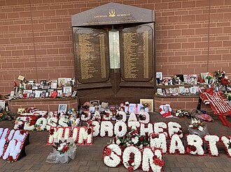

Liverpool F.C.
Liverpool Football Club is a professional football club based in Liverpool, England. The club competes in the Premier League, the top tier of English football. Founded in 1892, the club joined the Football League the following year and has played its home games at Anfield since its formation. Liverpool is one of the most valuable and widely supported clubs in the world.
Domestically, the club has won a joint-record twenty league titles, eight FA Cups, a record ten League Cups and sixteen FA Community Shields. In international competitions, the club has won six European Cups, three UEFA Cups, four UEFA Super Cups—all English records—and one FIFA Club World Cup. Liverpool established itself as a major force in domestic football in the 1960s under Bill Shankly, before becoming perennial title challengers at home and abroad under Bob Paisley, Joe Fagan and Kenny Dalglish who led the club to a combined eleven league titles and four European Cups through the 1970s and 80s. Liverpool won two further European Cups in 2005 and 2019 under the management of Rafael Benítez and Jürgen Klopp, respectively; the latter led Liverpool to a nineteenth league title in 2020, the club's first during the Premier League era. Following Klopp's departure in 2024, Arne Slot guided Liverpool to a twentieth league title in 2025.
Already nicknamed the Reds, it was under Shankly that the team first adopted the distinctive all-red home strip which has been used ever since. Also adopted under Shankly's tenure was the club's anthem "You'll Never Walk Alone". The Reds compete in the local Merseyside derby against Everton, often referred as the Blues. As the two most decorated clubs in England, and inter-city rivals, Liverpool also has a long-standing rivalry with Manchester United.
The club's supporters have been involved in two major tragedies. At the 1985 European Cup final in Brussels, the Heysel Stadium disaster saw 39 fans – mainly Italian supporters of opponents Juventus – die after they were crushed between onrushing Liverpool fans and a concrete wall that subsequently collapsed. As a result of persistent hooliganism, English teams were banned from European club competitions initially indefinitely, but ultimately for five years, and Liverpool for an additional year. In 1989, the Hillsborough disaster claimed the lives of 97 Liverpool supporters after grossly negligent policing led to a crowd crush; the disaster led to the elimination of fenced standing terraces in favour of all-seater stadiums in the top two tiers of English football. A decades-long campaign for justice in the case of Hillsborough saw further coroner's inquests, commissions and independent panels that ultimately exonerated the fans of all blame.
History
 Liverpool were founded following a dispute between the Everton committee and John Houlding, club president and owner of the land at Anfield. After eight years at the stadium, Everton relocated across Stanley Park to their new stadium of Goodison Park in 1892, and Houlding founded Liverpool F.C. to play at Anfield.[2] Originally named "Everton F.C. and Athletic Grounds Ltd" (Everton Athletic for short), the club became Liverpool F.C. in March 1892 and gained official recognition three months later, after The Football Association refused to recognise the club as Everton.[3]
Liverpool were founded following a dispute between the Everton committee and John Houlding, club president and owner of the land at Anfield. After eight years at the stadium, Everton relocated across Stanley Park to their new stadium of Goodison Park in 1892, and Houlding founded Liverpool F.C. to play at Anfield.[2] Originally named "Everton F.C. and Athletic Grounds Ltd" (Everton Athletic for short), the club became Liverpool F.C. in March 1892 and gained official recognition three months later, after The Football Association refused to recognise the club as Everton.[3]
Liverpool played their first match on 1 September 1892: a pre-season friendly match against Rotherham Town which they won 7–1. The team Liverpool fielded against Rotherham was composed entirely of Scottish players; the players who came from Scotland to play in England in those days were known as the Scotch Professors. Manager John McKenna had recruited the players after a scouting trip to Scotland—so they became known as the "team of Macs".[4] The team won the Lancashire League in its debut season and joined the Football League Second Division at the start of the 1893–94 season. After the club was promoted to the First Division in 1896, Tom Watson was appointed manager. He led Liverpool to its first league title in 1901, and won the league again in 1906.
Liverpool reached their first FA Cup final in 1914, losing 1–0 to Burnley. It won consecutive league championships in 1922 and 1923, but did not win another trophy until the 1946–47 season, when the club won the First Division for a fifth time under the control of ex-West Ham United centre half George Kay.[6] Liverpool suffered its second Cup Final defeat in 1950, playing against Arsenal.[7] The club was relegated to the Second Division in the 1953–54 season.[8] Soon after Liverpool lost 2–1 to non-league Worcester City in the 1958–59 FA Cup, Bill Shankly was appointed manager. Upon his arrival he released 24 players and converted a boot storage room at Anfield into a room where the coaches could discuss strategy; here, Shankly and other "Boot Room" members Joe Fagan, Reuben Bennett, and Bob Paisley began reshaping the team.
 The club was promoted back into the First Division in 1962 and won it in 1964, for the first time in 17 years. In 1965, the club won its first FA Cup. The following year, the club won the First Division but lost to Borussia Dortmund in the European Cup Winners' Cup final.[10] Liverpool won both the League and the UEFA Cup during the 1972–73 season, and the FA Cup again a year later. Shankly retired soon afterwards and was replaced by his assistant, Bob Paisley.[11] In 1976, Paisley's second season as manager, the club won another League and UEFA Cup double. The following season, the club retained the League title and won the European Cup for the first time, but it lost in the 1977 FA Cup final. Liverpool retained the European Cup in 1978 and regained the First Division title in 1979.[12] During Paisley's nine seasons as manager Liverpool won 20 trophies, including three European Cups, a UEFA Cup, six League titles and three consecutive League Cups; the only domestic trophy he did not win was the FA Cup.
The club was promoted back into the First Division in 1962 and won it in 1964, for the first time in 17 years. In 1965, the club won its first FA Cup. The following year, the club won the First Division but lost to Borussia Dortmund in the European Cup Winners' Cup final.[10] Liverpool won both the League and the UEFA Cup during the 1972–73 season, and the FA Cup again a year later. Shankly retired soon afterwards and was replaced by his assistant, Bob Paisley.[11] In 1976, Paisley's second season as manager, the club won another League and UEFA Cup double. The following season, the club retained the League title and won the European Cup for the first time, but it lost in the 1977 FA Cup final. Liverpool retained the European Cup in 1978 and regained the First Division title in 1979.[12] During Paisley's nine seasons as manager Liverpool won 20 trophies, including three European Cups, a UEFA Cup, six League titles and three consecutive League Cups; the only domestic trophy he did not win was the FA Cup.
Paisley retired in 1983 and was replaced by his assistant, Joe Fagan.[14] Liverpool won the League, League Cup and European Cup in Fagan's first season, becoming the first English side to win three trophies in a season.[15] Liverpool reached the European Cup final again in 1985, against Juventus at the Heysel Stadium. Before kick-off, Liverpool fans breached a fence that separated the two groups of supporters and charged the Juventus fans. The resulting weight of people caused a retaining wall to collapse, killing 39 fans, mostly Italians. The incident became known as the Heysel Stadium disaster. The match was played in spite of protests by both managers, and Liverpool lost 1–0 to Juventus. As a result of the tragedy, English clubs were banned from participating in European competition for five years; Liverpool received a ten-year ban, which was later reduced to six years. Fourteen Liverpool fans received convictions for involuntary manslaughter.
Fagan had announced his retirement just before the disaster and Kenny Dalglish was appointed as player-manager.[17] During his tenure, the club won another three league titles and two FA Cups, including a League and Cup "Double" in the 1985–86 season. Liverpool's success was overshadowed by the Hillsborough disaster: in an FA Cup semi-final against Nottingham Forest on 15 April 1989, hundreds of Liverpool fans were crushed against perimeter fencing.[18] Ninety-four fans died that day; the 95th victim died in hospital from his injuries four days later, the 96th died nearly four years later, without regaining consciousness, and the 97th, Andrew Devine, died in 2021 of injuries sustained in the disaster.[19][20] After the Hillsborough disaster there was a government review of stadium safety. The resulting Taylor Report paved the way for legislation that required top-division teams to have all-seater stadiums. The report ruled that the main reason for the disaster was overcrowding due to a failure of police control.
 Liverpool was involved in the closest finish to a league season during the 1988–89 season, finishing equal with Arsenal on both points and goal difference, but lost the title on total goals scored when Arsenal scored the final goal in the last minute of the season.
Dalglish cited the Hillsborough disaster and its repercussions as the reason for his resignation in 1991; he was replaced by former player Graeme Souness.[23] Under his leadership Liverpool won the 1992 FA Cup final, but their league performances slumped, with two consecutive sixth-place finishes, eventually resulting in his dismissal in January 1994. Souness was replaced by Roy Evans, and Liverpool went on to win the 1995 Football League Cup final.[24] While they made some title challenges under Evans, third-place finishes in 1996 and 1998 were the best they could manage, and so Gérard Houllier was appointed co-manager in the 1998–99 season, and became the sole manager in November 1998 after Evans resigned.[25] In 2001, Houllier's second full season in charge, Liverpool won a "treble": the FA Cup, League Cup and UEFA Cup.[26] Houllier underwent major heart surgery during the 2001–02 season and Liverpool finished second in the League, behind Arsenal.[27] They won a further League Cup in 2003, but failed to mount a title challenge in the two seasons that followed.
.jpg) Houllier was replaced by Rafael Benítez at the end of the 2003–04 season. Despite finishing fifth in Benítez's first season, Liverpool won the 2004–05 UEFA Champions League, beating AC Milan 3–2 in a penalty shootout after the match ended with a score of 3–3.[30] The following season, Liverpool finished third in the Premier League and won the FA Cup, beating West Ham United in a penalty shootout after the match finished 3–3.[31] American businessmen George Gillett and Tom Hicks became the owners of the club during the 2006–07 season, in a deal which valued the club and its outstanding debts at £218.9 million.[32] The club reached the 2007 UEFA Champions League final against Milan, as it had in 2005, but lost 2–1.[33] During the 2008–09 season Liverpool achieved 86 points, its then-highest Premier League points total, prior to the record-breaking 2018–19 season, and finished as runners up to Manchester United.
Houllier was replaced by Rafael Benítez at the end of the 2003–04 season. Despite finishing fifth in Benítez's first season, Liverpool won the 2004–05 UEFA Champions League, beating AC Milan 3–2 in a penalty shootout after the match ended with a score of 3–3.[30] The following season, Liverpool finished third in the Premier League and won the FA Cup, beating West Ham United in a penalty shootout after the match finished 3–3.[31] American businessmen George Gillett and Tom Hicks became the owners of the club during the 2006–07 season, in a deal which valued the club and its outstanding debts at £218.9 million.[32] The club reached the 2007 UEFA Champions League final against Milan, as it had in 2005, but lost 2–1.[33] During the 2008–09 season Liverpool achieved 86 points, its then-highest Premier League points total, prior to the record-breaking 2018–19 season, and finished as runners up to Manchester United.
In the 2009–10 season, Liverpool finished seventh in the Premier League and failed to qualify for the Champions League. Benítez subsequently left by mutual consent[35] and was replaced by Fulham manager Roy Hodgson.[36] At the start of the 2010–11 season Liverpool was on the verge of bankruptcy and the club's creditors asked the High Court to allow the sale of the club, overruling the wishes of Hicks and Gillett. John W. Henry, owner of the Boston Red Sox and Fenway Sports Group, bid successfully for the club and took ownership in October 2010.[37] Poor results during the start of that season led to Hodgson leaving the club by mutual consent and former player and manager Kenny Dalglish taking over.[38] In the 2011–12 season, Liverpool secured a record eighth League Cup success and reached the FA Cup final, but finished eighth in the Premier League, their worst league finish in 18 years; this led to the sacking of Dalglish.[39][40] He was replaced by Brendan Rodgers,[41] whose Liverpool team in the 2013–14 season mounted an unexpected title charge to finish second behind champions Manchester City and subsequently return to the Champions League, scoring 101 goals in the process, the most since the 106 scored in the 1895–96 season.[42][43] Following a disappointing 2014–15 season, where Liverpool finished sixth in the league, and a poor start to the following campaign, Rodgers was sacked in October 2015.
Rodgers was replaced by Jürgen Klopp.[45] Liverpool reached the finals of the Football League Cup and UEFA Europa League in Klopp's first season, finishing as runner-up in both competitions.[46] The club finished second in the 2018–19 season with 97 points – surpassing the 86 points gained during the 2008–09 season and a points record for a non-title winning side – and only one loss.[47] Klopp took Liverpool to successive UEFA Champions League finals in 2018 and 2019, with the club defeating Tottenham Hotspur 2–0 to win the latter.[48][49] Liverpool beat Flamengo of Brazil in the final 1–0 to win the FIFA Club World Cup for the first time.[50] The following season, Liverpool won their first top-flight league title in thirty years.[51] The club set multiple records in the season; they won the league with seven games remaining, the earliest any team has ever won the title,[52] reaching a club record 99 points, and won a joint-record 32 games in a top-flight season.[53] The 2021–22 season saw the club win the domestic cup double, the FA Cup and the League Cup.[54] In January 2024, Klopp announced that he would leave the club at the end of the season, and he won his final trophy with the club, the League Cup, the following month.
Arne Slot was announced as Klopp's successor,[57] and the club won a record-equalling twentieth top-flight league title in his first season in charge.
Colours and badge
For much of Liverpool's history, its home colours have been all red. When the club was founded in 1892, blue and white quartered shirts were used until the club adopted the city's colour of red in 1896.[2] The city's symbol of the liver bird was adopted as the club's badge (or crest, as it is sometimes known) in 1901, although it was not incorporated into the kit until 1955. Liverpool continued to wear red shirts and white shorts until 1964 when manager Bill Shankly decided to change to an all-red strip.[59] Liverpool played in all red for the first time against Anderlecht, as Ian St John recalled in his autobiography:
He [Shankly] thought the colour scheme would carry psychological impact – red for danger, red for power. He came into the dressing room one day and threw a pair of red shorts to Ronnie Yeats. "Get into those shorts and let's see how you look", he said. "Christ, Ronnie, you look awesome, terrifying. You look 7 ft tall." "Why not go the whole hog, boss?" I suggested. "Why not wear red socks? Let's go out all in red." Shankly approved and an iconic kit was born.
The Liverpool away strip has more often than not been all yellow or white shirts and black shorts, but there have been several exceptions. An all grey kit was introduced in 1987, which was used until the 1991–92 centenary season when it was replaced by a combination of green shirts and white shorts. After various colour combinations in the 1990s, including gold and navy, bright yellow, black and grey, and ecru, the club alternated between yellow and white away kits until the 2008–09 season, when it re-introduced the grey kit. A third kit is designed for European away matches, though it is also worn in domestic away matches on occasions when the current away kit clashes with a team's home kit. Between 2012 and 2015, the kits were designed by Warrior Sports, who became the club's kit providers at the start of the 2012–13 season.[61] In February 2015, Warrior's parent company New Balance announced it would be entering the global football market, with teams sponsored by Warrior now being outfitted by New Balance.[62] The only other branded shirts worn by the club were made by Umbro until 1985, when they were replaced by Adidas, who produced the kits until 1996 when Reebok took over. They produced the kits for 10 years before Adidas made the kits from 2006 to 2012.[63] Nike became the club's official kit supplier at the start of the 2020–21 season.[64] In 2025, the club reunited with Adidas in a new 10-year partnership.
Liverpool was the first English professional club to have a sponsor's logo on its shirts, after agreeing a deal with Hitachi in 1979.[67] However, for the first few years of the deal, broadcasting rules meant that sponsors logos could not be shown on shirts for televised matches.
Since then, the club has been sponsored by Crown Paints, Candy, Carlsberg and Standard Chartered. The contract with Carlsberg, which was signed in 1992, was the longest-lasting agreement in English top-flight football.[69] The association with Carlsberg ended at the start of the 2010–11 season, when Standard Chartered Bank became the club's sponsor.
The Liverpool badge is based on the city's liver bird symbol, which in the past had been placed inside a shield. In 1977, a red liver bird standing on a football (blazoned as "Statant upon a football a Liver Bird wings elevated and addorsed holding in the beak a piece of seaweed gules") was granted as a heraldic badge by the College of Arms to the English Football League intended for use by Liverpool. However, Liverpool never made use of this badge.[71] In 1992, to commemorate the centennial of the club, a new badge was commissioned, including a representation of the Shankly Gates. The next year twin flames were added at either side, symbolic of the Hillsborough memorial outside Anfield, where an eternal flame burns in memory of those who died in the Hillsborough disaster.[72] In 2012, Warrior Sports' first Liverpool kit removed the shield and gates, returning the badge to what had adorned Liverpool shirts in the 1970s; the flames were moved to the back collar of the shirt, surrounding the number 96 for the number who died at Hillsborough.[73] Following the death of Andrew Devine, and the subsequent ruling by a coroner that he was also unlawfully killed, the number 97 has been worn in this place since the beginning of the 2022–23 season.
Stadium
Liverpool's home stadium is Anfield, which was built in 1884 on land adjacent to Stanley Park. Situated 2 miles (3.2 km) from Liverpool city centre, it was originally used by Everton before the latter moved to Goodison Park after a dispute over rent with Anfield owner John Houlding.[75] Left with an empty ground, Houlding founded Liverpool in 1892 and the club has played at Anfield ever since. The capacity of the stadium at the time was 20,000, although only 100 spectators attended Liverpool's first match at Anfield.
The Kop is the stadium section where Liverpool's most vocal supporters, often referred to as "Kopites," have traditionally gathered.[77] Historically, the Kop was a terraced stand before it was converted to seating, and it has long been recognized as the heart of Anfield's fan base. It was originally built in 1906 due to the high turnout for matches and was called the Oakfield Road Embankment. Its first game was on 1 September 1906 when the home side beat Stoke City 1–0.[78] In 1906, the banked stand at one end of the ground was formally renamed the Spion Kop after a hill in KwaZulu-Natal.[79] The hill was the site of the Battle of Spion Kop in the Second Boer War, where over 300 men of the Lancashire Regiment died, many of them from Liverpool.[80] At its peak, the stand could hold 28,000 spectators and was one of the largest single-tier stands in the world. Many stadiums in England had stands named after Spion Kop, but Anfield's was the largest of them at the time; it could hold more supporters than some entire football grounds.
Anfield could accommodate more than 60,000 supporters at its peak and had a capacity of 55,000 until the 1990s, when, following recommendations from the Taylor Report, all clubs in the Premier League were obliged to convert to all-seater stadiums in time for the 1993–94 season, reducing its capacity to 45,276.[82] The findings of the report precipitated the redevelopment of the Kemlyn Road Stand, which was rebuilt in 1992, coinciding with the centenary of the club, and was known as the Centenary Stand until 2017 when it was renamed the Sir Kenny Dalglish Stand. An extra tier was added to the Anfield Road end in 1998, which further increased the capacity of the ground but gave rise to problems when it was opened. A series of support poles and stanchions were inserted to give extra stability to the top tier of the stand after movement of the tier was reported at the start of the 1999–2000 season.
Because of restrictions on expanding the capacity at Anfield, Liverpool announced plans to move to the proposed Stanley Park Stadium in May 2002.[84] Planning permission was granted in July 2004,[85] and in September 2006, Liverpool City Council agreed to grant Liverpool a 999-year lease on the proposed site.[86] Following the takeover of the club by George Gillett and Tom Hicks in February 2007, the proposed stadium was redesigned. The new design was approved by the Council in November 2007. The stadium was scheduled to open in August 2011 and would hold 60,000 spectators, with HKS, Inc. contracted to build the stadium.[87] Construction was halted in August 2008, as Gillett and Hicks had difficulty in financing the £300 million needed for the development.[88] In October 2012, BBC Sport reported that Fenway Sports Group, the new owners of Liverpool, had decided to redevelop their current home at Anfield rather than building a new stadium in Stanley Park. As part of the redevelopment, the capacity of Anfield was to increase from 45,276 to approximately 60,000 and would cost approximately £150 million.[89] When construction was completed on the new Main stand, the capacity of Anfield was increased to 54,074. This £100 million expansion added a third tier to the stand. This was all part of a £260 million project to improve the Anfield area. Jürgen Klopp the manager at the time described the stand as "impressive".
In June 2021, it was reported that Liverpool City Council had given planning permission for the club to renovate and expand the Anfield Road stand, boosting the capacity by around 7,000 and taking the overall capacity at Anfield to 61,276. The expansion, which is estimated to cost £60 million, was described as "a huge milestone" by managing director Andy Hughes, and would also see rail seating being trialled in the Kop for the 2021–22 Premier League season.[91] The first league game to feature an attendance of over 60,000 at Anfield, following the near completion of the Anfield Road stand redevelopment, was a Premier League match against Brighton & Hove Albion on 31 March 2024.
Liverpool
| Full name | Liverpool Football Club |
| Nickname(s) | The Reds |
| Founded | 3 June 1892; 133 years ago |
| Ground | Anfield |
| Capacity | 61,276 |
| Owner | Fenway Sports Group |
| Chairman | Tom Werner |
| Head coach | Arne Slot |
| League | Premier League |
| 2024–25 | Premier League, 1st of 20 (champions) |
| Website | liverpoolfc.com |
Leave a Comment